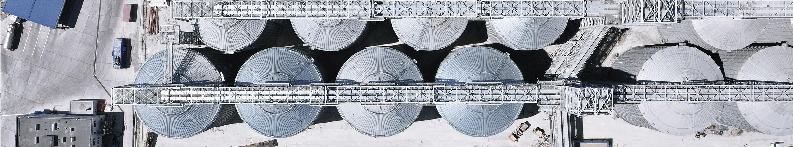
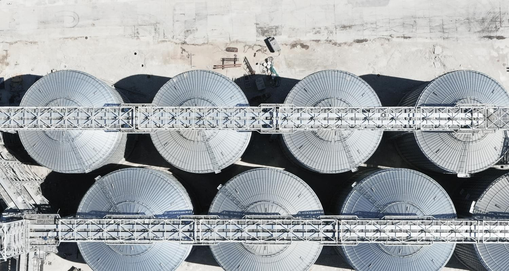

История
О Компании


История

2
0
-
21
-
20
- Завершено строительство дополнительных пунктов ж/д и автоприема
- Пропускная способность увеличилась до 6 млн тонн
-
19
- Начаты работы по строительству причала №40А КСК
-
18
- Старт строительства силосов, дополнительных пунктов ж/д и автоприема на КСК
-
17
- Рекордный год (календарный) — 4,2 млн тонн
- Рекордный с/х год: 2017/2018 — 4,9 млн тонн
-
16
- Подписание соглашения с ФГУП «Росморпорт» о взаимодействии в рамках реализации инвестиционного проекта по обеспечению безопасности мореплавания и увеличению грузооборота КСК на 1,5 млн тонн в год
- Подготовка документации по проекту увеличения мощностей терминала
-
15
- Утверждены основные направления развития терминала до 2019 года
-
14
- Рекордный объем перевалки зерна — 2,8 млн тонн
-
13
- Завершено строительство терминала, введен в эксплуатацию железнодорожный парк, что позволило увеличить пропускные мощности терминала до плановых 3,5 млн тонн
-
12
- Запущена инвестиционная программа, направленная на увеличение пропускной способности терминала, расширение складских площадей и строительство железнодорожной ветки
- Введены в эксплуатацию 3 силоса вместимостью 3 000 тонн каждый и новая транспортерная лента для погрузки зерна на судно. Пропускная способность КСК увеличилась до 2 млн тонн зерна в год
-
11
- КСК в числе других стивидорных активов Группы был консолидирован в холдинговую компанию DELOPORTS LIMITED
-
10
- Группа компаний «Дело» приобрела территорию терминала ОАО «КСК» и консолидировала ее с правами аренды причалов в единое предприятие
-
08
- Введена в эксплуатацию перевалка зерна на терминале
-
06
- Разработана проектная документация для строительства нового зернового терминала КСК пропускной способностью 3,5 млн тонн